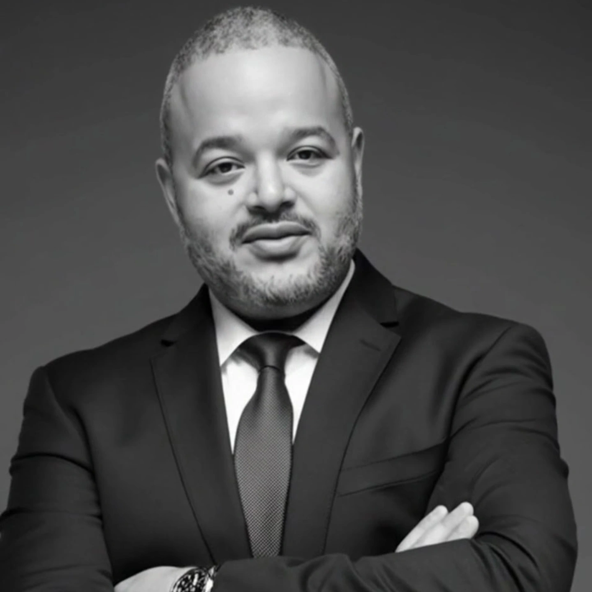

Manuel Ruiz
With over 25 years of experience building, securing, and scaling IT infrastructure, Manuel founded Intelligent iT with a simple conviction: businesses deserve IT that works proactively, not reactively. His career has taken him from the helpdesk to the boardroom, giving him a rare perspective that spans hands-on engineering and executive strategy.
Manuel has spent his career helping organizations across finance, healthcare, professional services, and other regulated industries navigate the complexities of cybersecurity, compliance, and digital transformation. He is a passionate advocate for AI-powered automation as the key to eliminating downtime, reducing costs, and freeing teams to focus on what matters most.
Under his leadership, Intelligent iT has grown into a trusted partner for 50-500 employee companies across the United States, delivering guaranteed 2-minute response times, 99.9% uptime, and a 90-day money-back promise that reflects his personal commitment to client success.
A Message from Our Founder
"I started Intelligent iT because I saw too many businesses trapped in a cycle of reactive, break-fix IT that drained their budgets and their patience. I knew there was a better way. By combining AI-powered automation with real, experienced engineers, we could deliver something the industry desperately needed: IT that prevents problems instead of just responding to them."
"Every guarantee we make, from our 2-minute response time to our 90-day money-back promise, is a reflection of my personal commitment to our clients. If we don't deliver, you don't pay. It's that simple."
Meet the Team
The people who keep your business running around the clock.


Our Leadership Commitment
Ready to meet the team?
Book a call with Thomas Atkins, our Head of Growth, to discuss how Intelligent iT can transform your IT operations.